Lay summary. Maps of where shadows fall in aerial photos help cities measure urban heat, estimate sunlight on surfaces, and outline buildings. The programs that draw these maps are often trained on photos of one city and then used in another, but no one had a standard way to measure the accuracy lost in the move. We built ShadowTransfer, a collection of 4,500 aerial images of Chicago, Miami, and Phoenix in which people traced and checked every shadow. We train on two cities and test on the third. Every program we tested lost accuracy in the new city, the loss persisted with four times more training data, and most existing fixes did worse than standard training. Looking inside, we found the programs grow unsure about shadows while staying confident about everything else. Our public data and tools let anyone check whether a shadow map will hold up in a new city.
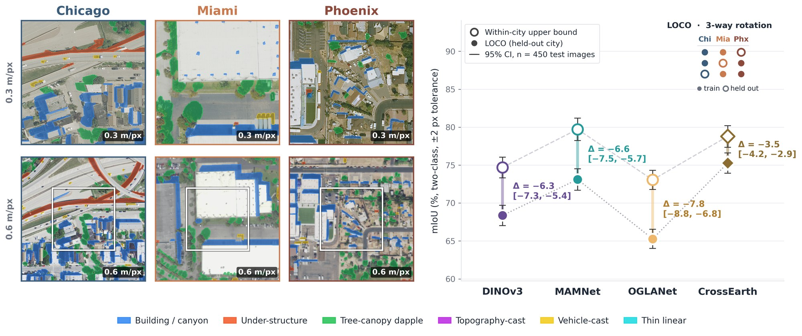
Shadow detection under geographic shift
Several overhead-imagery pipelines take shadow masks as input. Solar irradiance estimation uses them to separate shaded from sunlit surfaces, urban heat mapping uses them to correct surface temperature readings, and building extraction uses them to resolve occlusion boundaries. These pipelines are routinely trained on imagery from one region and deployed in another.
For overhead shadow detection, no benchmark measured what that move costs. AISD, the largest human-verified overhead shadow dataset, contains 514 images and defines no train-test split across cities. S-EO is larger but relies on automatically generated masks and reports no geographic holdout.
| Dataset | Domain | Scale | Human QC | Cities | Multi-res | Transfer protocol |
|---|---|---|---|---|---|---|
| ISTD | Ground-level | 1,870 | ✓ | – | × | × |
| AISD | Aerial 0.3 m | 514 | ✓ | 5 | × | × |
| Airborne-Shadow | Aerial | n/r | ✓ | DE only | × | × |
| S-EO | Satellite 0.3 m | ~19,000 | × (auto) | 3 (US) | × | × |
| ShadowTransfer | Aerial 0.3/0.6 m | 4,500 | ✓ | 3 (US) | ✓ | ✓ LOCO |
Table 1 of the paper. ISTD is ground-level and included for context only. n/r: not reported.
The dataset
ShadowTransfer contains 4,500 RGB patches of 384×384 pixels from National Agriculture Imagery Program (NAIP) orthoimagery of Chicago, Miami and Phoenix. Each city contributes 1,500 patches, split evenly across two native NAIP resolutions, 0.3 m and 0.6 m. We keep both native resolutions because NAIP releases them as separate acquisitions with different sensor characteristics. For each city and resolution, the 750 patches are split into 450 training, 150 validation and 150 test images, and 150 coordinates per city are imaged at both resolutions.
Chicago
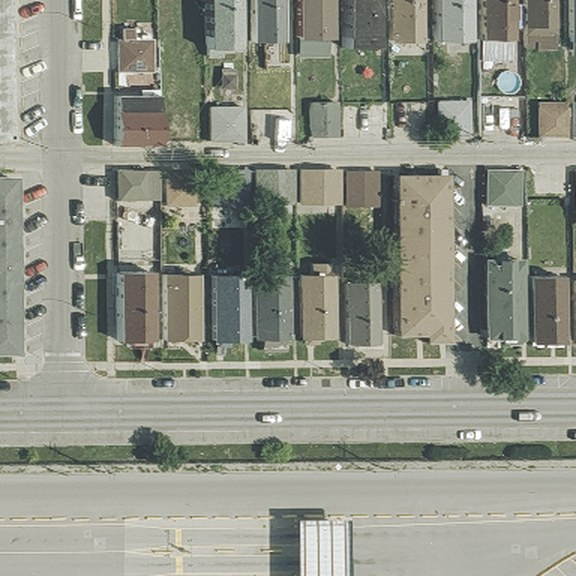
0.3 m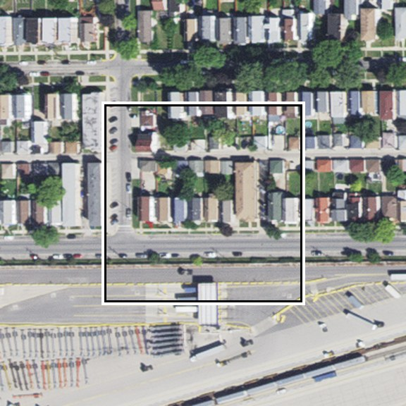
0.6 mMiami
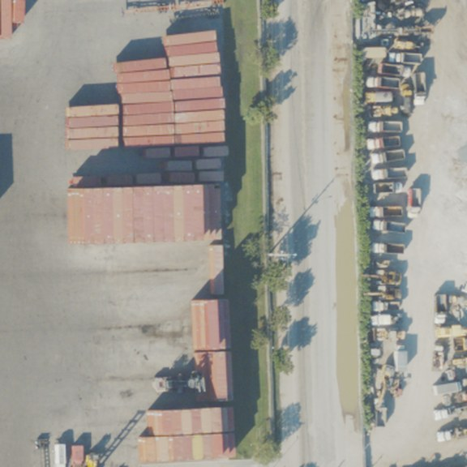
0.3 m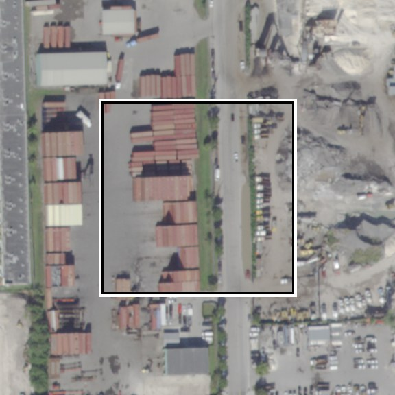
0.6 mPhoenix
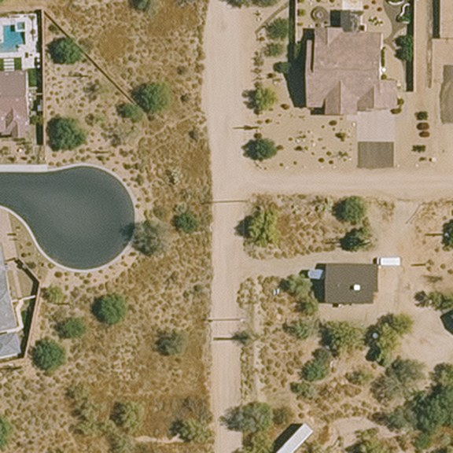
0.3 m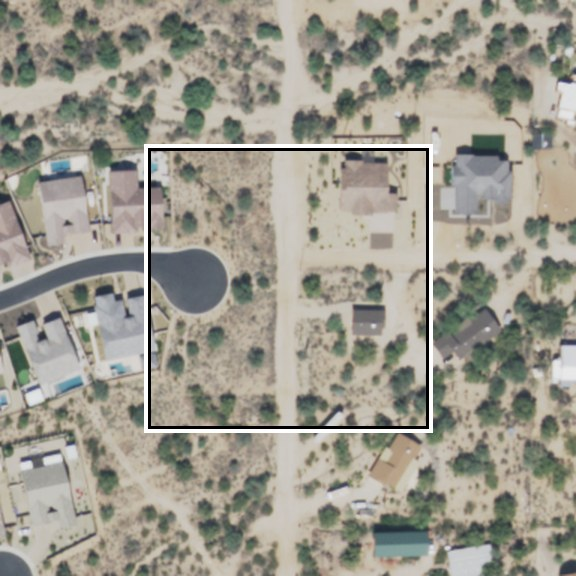
0.6 mTest-split patches from the Hugging Face release. Each 0.6 m patch shares its centre coordinates with the 0.3 m patch above it; the white box marks the 0.3 m footprint. The benchmark evaluates binary masks (shadow vs. background); the six-way typing is released for downstream analyses.
How the masks were made
Seven trained annotators produced the masks in a three-phase pipeline. Phase 1 labels images from scratch with SAM-assisted tools. Phase 2 trains an interim shadow detector on Phase 1 labels and uses its predictions to seed later batches, which annotators then edit. Phase 3 is a retroactive quality-control pass that compares every segment with a final-model prediction and returns disagreements for adjudication. Every 100-image batch includes 5 gold images with frozen reference masks, and Cohen's κ on these images tracks annotator drift (phase-3 mean κ = 0.89).
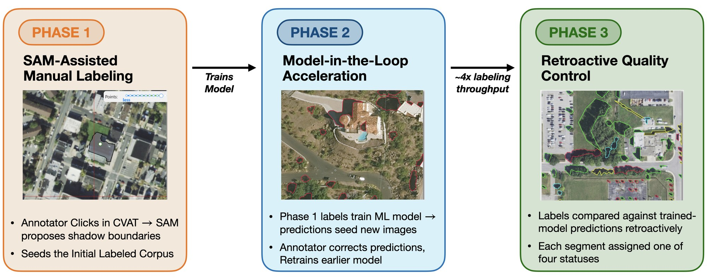
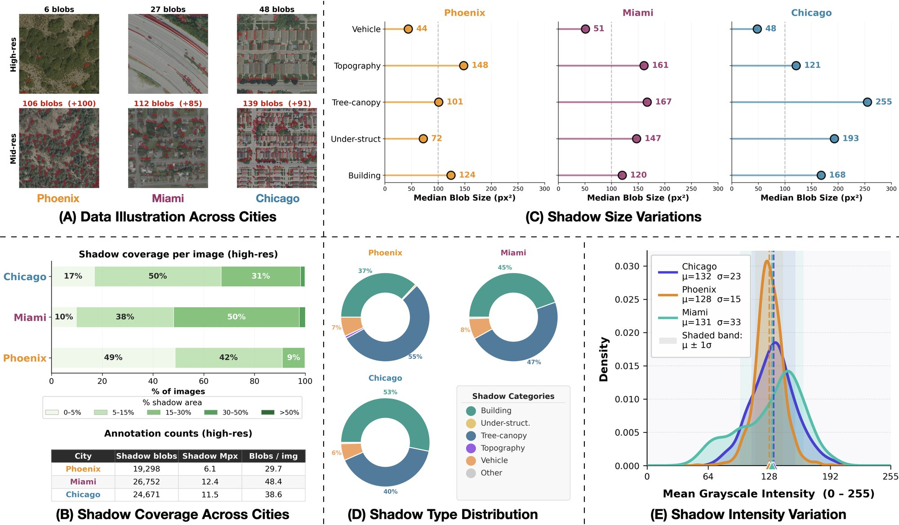
The leave-one-city-out benchmark
For each held-out city, we train on the other two cities (225 images each) and test on the held-out city's 150 test images. The within-city upper bound trains on the held-out city's own 450 training images and tests on the same 150 images. Because both models see 450 training images, the gap between them isolates the change of city from training-set size. We score with boundary-tolerant mIoU: the mean of shadow and background IoU, with a ±2-pixel don't-care band because shadow boundaries are imprecise to annotate.
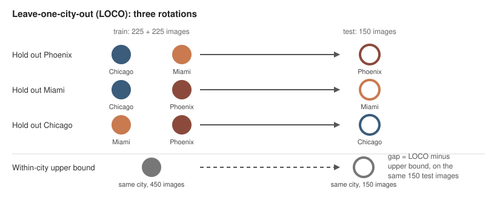
Under vanilla training, holding out the test city costs 3.5 to 7.8 mIoU across four architectures (MAMNet, OGLANet, DINOv3 and the remote-sensing foundation model CrossEarth). Across all 158 test cells, 157 degrade significantly. Six of eight adaptation methods degrade more than vanilla training on average, and the cost of a method depends on the architecture. ISW costs DINOv3 −18.5 mIoU against −11.1 on OGLANet, while MRFP+ costs OGLANet −14.0 against −4.9 on DINOv3. Without access to the target city, a practitioner has no basis for choosing among them.
Alternative explanations for the gap
We tested four alternative explanations for the gap: training-set scale, appearance statistics, encoder fine-tuning, and the pretraining and fine-tuning regime.
Training-set scale
Quadrupling the LOCO training set from 225 to 900 images narrows the gap by 0.80 mIoU (95% CI [0.46, 1.14]), from 6.48 to 5.50. The upper bound stays significantly ahead in every 900-image cell.
Appearance statistics
Matching each test image's pixel histogram to the training cities improves none of the 9 vanilla cells and lowers mean mIoU by 0.45. Retraining with strong appearance-only augmentation leaves six of nine gaps within twice their seed-to-seed spread.
Encoder fine-tuning
With the DINOv3 encoder frozen and only the decoder trained, the upper bound still exceeds LOCO by 7.10, 2.67 and 2.75 mIoU on Chicago, Miami and Phoenix.
Pretraining and learning rate
We trained MAMNet with a ResNet-50 encoder under supervised or self-supervised pretraining, each at a high or low learning rate. Encoder retraining recovers all four versions (median R 0.80 to 0.87).
Limits of these tests: three cities cannot separate a Phoenix-specific appearance effect from Phoenix's larger seed variance, and pretraining scale remains confounded between DINOv3 and the self-supervised ResNet-50. Full protocols and caveats are in Appendix H.
Diagnosing the transfer failure
Three controlled probes on the LOCO models locate the failure. They are ordered by what a practitioner would try first.
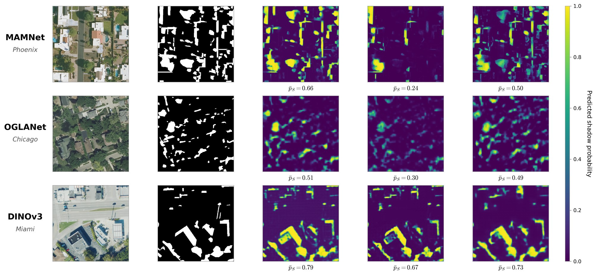
1. Histogram alignment lowers mIoU
Matching each test image's intensity histogram to the training cities lowers mean mIoU by 0.45 across the 9 vanilla LOCO cells, and no cell improves. At the median, matched images lie 2.5 to 3.7 times as far from the upper bound as the unmatched LOCO predictions. A pixel-level shortcut would predict partial recovery, so this result indicates that an effective intervention must act on learned features.
2. The selective-prediction gap concentrates on shadow pixels
Deployed systems use confidence-thresholded predictions, so we measured how threshold-conditioned error rises under transfer. On shadow pixels the gap averages +0.136 across 63 cells; on background pixels it averages +0.006. True-positive logits drop by 0.85 nats on average, while false-positive logits change by −0.15 nats. The same foreground-concentrated pattern appears when we repeat the protocol on INRIA building footprints, a task whose foreground class is defined by building shape.
3. The recoverable component depends on the architecture
Retraining only the decoder on 25% of the held-out city's training data recovers DINOv3 (R = 0.69) and MAMNet (R = 0.67) and leaves OGLANet near its LOCO level (R = 0.12). Retraining only the encoder lowers DINOv3 below LOCO (R = −0.13) and recovers both CNNs (R = 0.88 MAMNet, R = 0.86 OGLANet). This architecture dependence is consistent with the adaptation results above, where ISW and MRFP+ each act on a fixed component and their cost differs across architectures.
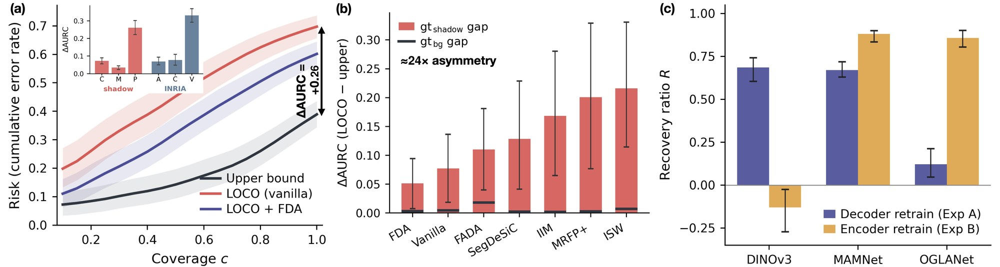
We repeated the benchmark and the three probes on S-EO (WorldView-3 imagery of Omaha, Jacksonville and San Diego). The upper bound exceeds LOCO in all 12 (architecture, held-out city) pairs, and histogram matching lowers mIoU in all 36 vanilla cells. On S-EO the background probability also shifts in 10 of 12 pairs, so the confidence change there extends beyond the shadow class.
Case study: SIB
To check whether the diagnosis gives usable design guidance, we built the Spectral Information Bottleneck (SIB), a plug-in module with one component per finding. A Haar-wavelet bottleneck on the encoder output compresses low-frequency, city-specific content strongly and boundary subbands gently. Skip gates and Fourier Domain Adaptation preprocessing apply to CNN backbones only, since ViTs carry their recoverable component in the decoder. At deployment, a coverage threshold fitted on source-city validation data uses no held-out labels.
Over the 9 cells, SIB has the smallest mean gap to the within-city upper bound of the ten methods we evaluate, 6.42 mIoU (95% CI [5.01, 7.96]), level with FDA at 6.47. Its worst-case gap, 10.41 mIoU (OGLANet, Miami), is second to FDA's 9.10 and cannot be separated from it. SIB still leaves a significant gap in all 9 cells. We designed SIB on the same cells we evaluate it on, so the result shows that the diagnosis yields a usable design and does not test the diagnosis independently.
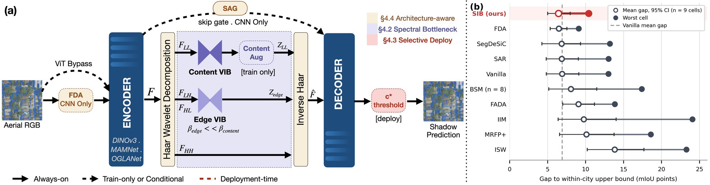
Use the benchmark
The dataset is on Hugging Face in two layouts holding the same images and masks: data_cities/ (per city, resolution and split) and data_loco/ (the three leave-one-city-out folds). Download one or both:
from huggingface_hub import snapshot_download
path = snapshot_download(
repo_id="shagunmittal/ShadowTransfer",
repo_type="dataset",
allow_patterns=["data_loco/*"], # or "data_cities/*"
)
# data_loco/fold_0_holdout_phoenix/highres/{train,val,test}/{images,masks}/To compare a new method with the paper:
- report all three held-out cities at both resolutions, six test cells per method;
- score two-class boundary-tolerant mIoU at K = 2 with
shadowtransfer/metrics.pyfrom the code repository; - report the gap to the within-city upper bound on the same test images alongside the LOCO score.
Intended and unsupported uses
Beyond benchmarking geographic transfer, the masks and per-patch metadata support building footprint and façade extraction (as occlusion priors), shadow-removal research, domain generalization for dense prediction, and urban-morphology or solar-geometry analysis. The data does not support claims about generalization beyond grid-pattern North American cities, beyond NAIP RGB sensors, or across seasons, and the 0.3 m and 0.6 m subsets should not be synthesized from each other.
Limitations
The benchmark covers three U.S. cities, RGB-only NAIP imagery, a single fall season and four architectures. We characterize where the failure occurs, how it distorts predictions and which component recovers it, but we do not isolate a causal mechanism connecting these. DINOv3's decoder locus cannot be attributed to its ViT architecture alone, since no CNN in our tests matches its pretraining scale.
Cite
Paper:
@inproceedings{mittal2026shadowtransfer,
title = {ShadowTransfer: A Geographic Transfer Benchmark for Overhead Shadow Detection},
author = {Mittal, Shagun and Yeh, Raymond A. and Ukkusuri, Satish},
booktitle = {Advances in Neural Information Processing Systems (NeurIPS), Track on Evaluations and Datasets},
year = {2026}
}Dataset release (DOI):
@misc{mittal2026shadowtransferdata,
author = {Mittal, Shagun and Yeh, Raymond A. and Ukkusuri, Satish},
title = {{ShadowTransfer} (Revision 5bef90e)},
year = {2026},
publisher = {Hugging Face},
doi = {10.57967/hf/11483},
url = {https://huggingface.co/datasets/shagunmittal/ShadowTransfer}
}Please also credit the USDA Farm Service Agency Aerial Photography Field Office for the NAIP imagery.